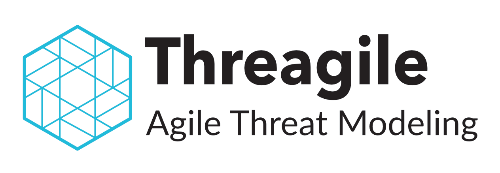

|  |
|
Analyze either the YAML model file directly or a ZIP archive with resources included. Use the example YAML file (linked below) as a starting point. Upload model file to analyze: |
|
Example model: threagile-example-model.yaml Minimal stub model: threagile-stub-model.yaml |
|
Enable YAML autocompletion and validation for models in your IDE via schema.json. |
|
Code snippets like live-templates.txt might be a nice addition for asset skeletons in your IDE. |
|
Looking for the API? See openapi.yaml & swagger-ui. |